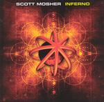

| Artist: | Scott Mosher |
| Title: | Inferno |
| Label: | The Ambient Mind no catnr |
| Length(s): | 61 minutes |
| Year(s) of release: | 2004 |
| Month of review: | [10/2004] |
| 1) | Descent | 1.58 |
| 2) | Inferno | 3.38 |
| 3) | Dark Sun | 4.17 |
| 4) | Mindfield | 4.18 |
| 5) | Left Behind | 4.37 |
| 6) | Exile | 8.57 |
| 7) | Engines Of Industry | 5.26 |
| 8) | Look Into You | 5.43 |
| 9) | Ghostland | 4.26 |
| 10) | The World Fades To Gray | 11.08 |
| 11) | Season Of Fire (infernal Re-mix) | 6.57 |
Even though Dark Sun is another instrumental track, heavy synths with once again that heavy drum sound and distorted guitar, most tracks on the album are vocal. This track has an EM feel, but is much more heavy than normally perceived in the genre, making it more to my liking.
Mindfield has poppy & choppy drumming, eighties Tangerine Dream type synths and rocky guitars. This track definitely has a different feel from the previous ones. Not exactly an improvement.
Left Behind switches to a gurgling lesley organ with just a hint of Mark Kelly, with Corsa's vocals shifting in the direction of Geddy Lee's. Halfway through sequencers move to the fore, changing the face of the track. The combination of these sequencers with heavy guitars is quite a surprising one with definite merit.
Exile is pretty heavy once again. Corsa at times reaches, but doesn't quite get there. Where the previous tracks seem a bit on the short side, this one has some more room to work on the theme. This works out well, from a melodic point of view. The choppy drums on the other hand do not work out so well.
Engines Of Industry not only has the heavy guitars, the synths are turned up a bit too. Since this track is another instrumental, the instruments get even more room to wreak their havoc. This is the heavy heavy monster sound.
Look Into You stylistically reminds of Left Behind, Kelly synths (even stronger now) and Lee vocals.
The World Fades To Gray pretty much follows the pattern of the other shorter vocal tracks, but where those would end this moves into an intermediate atmospheric section, to set us up for a guitar solo that is very much rock. Without wanting to imply I felt cheated at the end, I didn't quite understand how this track lasted eleven minutes.
The closing Season Of Fire remix is a lot of sequencer as well as beats. This is not exactly a full blown dance track, it does definitely shift in the direction, making for a different closing.